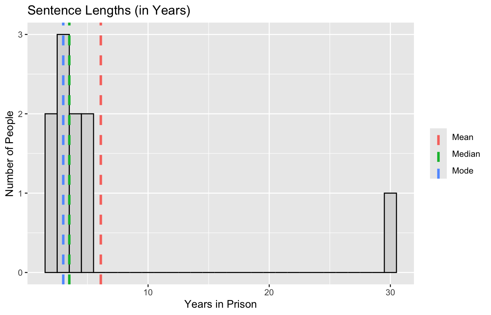
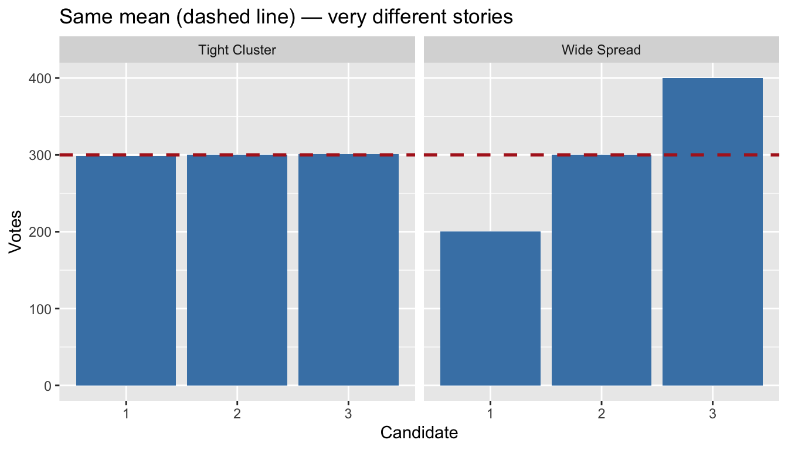
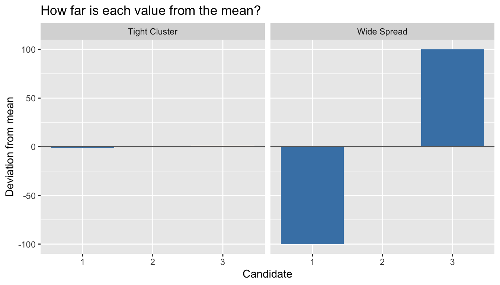
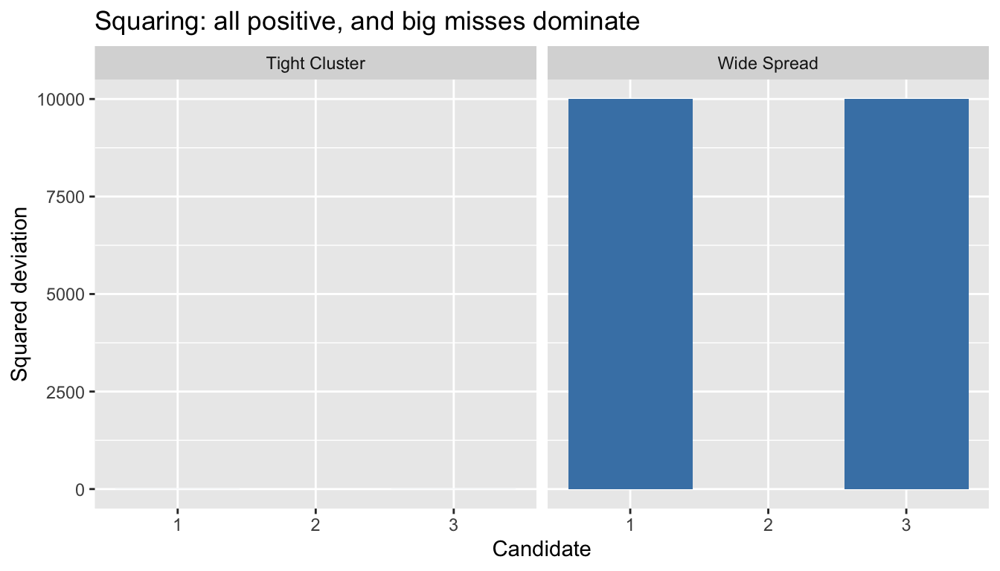
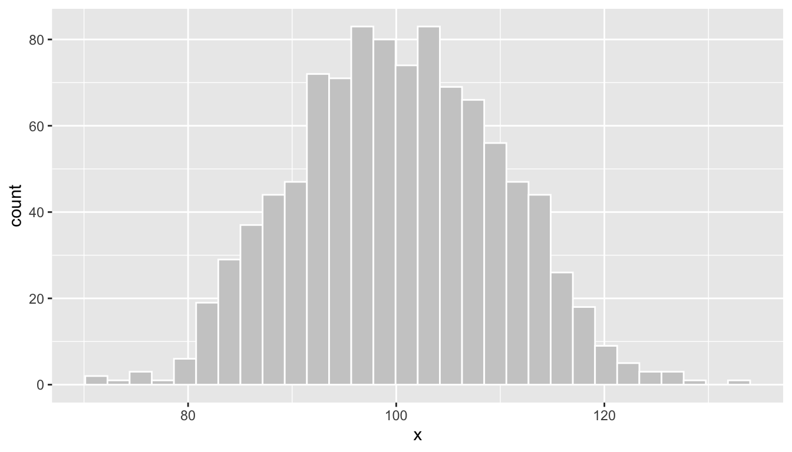
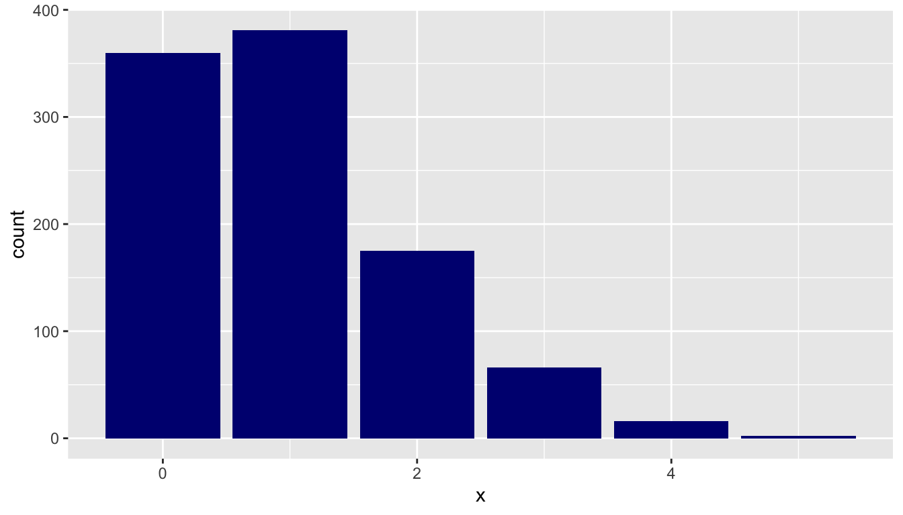
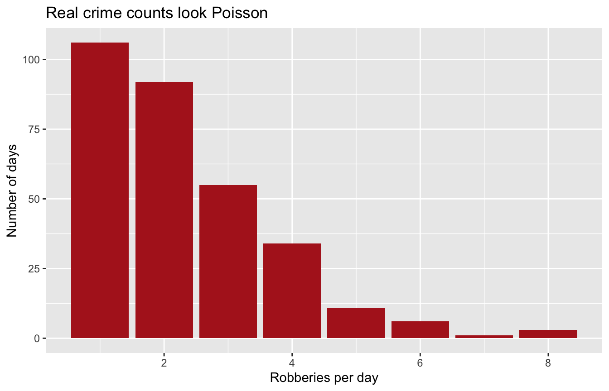

Demo Walkthrough · Session 2
Central tendency, dispersion, and distribution shapes — the hard way first, then the easy way
What this page is. The Session 2 lecture demos, written down step by step. Every chunk below is self-contained — copy any of them into your own R session and they run as-is. Use this page to catch up after a missed class, or to re-run what happened on screen at your own pace.
What you’ll build
- Mean, median, and mode — computed by hand first, so the built-ins never feel like magic
- The sentencing demo: one 30-year outlier, three very different answers to “what’s typical?” — then the same lesson live in Chicago’s 77 community areas
- The dispersion machinery, one step at a time: raw values → deviations → squared deviations → variance → SD
- The empirical rule (68–95–99.7), checked against real daily crime counts
- The Poisson distribution — and proof that real robbery counts actually follow it
Setup
Everything below needs the tidyverse, plus modeest for the mode (install.packages("modeest") once — then library() every session):
1 · Three ways to say “typical”
Seven days of rainfall. The mean is just “add them up, divide by how many” — do it the hard way once so you know exactly what mean() does:
The median is the middle value of the sorted data, and the mode is the most frequent value. Base R has no mode function (mode() does something else entirely!), so we use mfv() — “most frequent value” — from modeest:
sort(rainfall) # seven values, so the 4th one is the middle[1] 0 0 0 1 1 2 4median(rainfall)[1] 1mfv(rainfall)[1] 0Three answers — mean ≈ 1.14, median 1, mode 0 — from the same seven numbers. When could they disagree by enough to matter? Glad you asked.
2 · When “the average” misleads: sentencing
Ten people convicted of robbery, and one judge in a bad mood:
One 30-year sentence drags the mean to 6.1 years — yet nobody in the data actually received a sentence near 6 years. The median (3.5) and mode (3) describe the group far better:
sent_stats <- tibble(
measure = c("Mean", "Median", "Mode"),
value = c(mean(sentences), median(sentences), mfv(sentences))
)
ggplot(tibble(sentences), aes(sentences)) +
geom_histogram(binwidth = 1, fill = "grey85", color = "black") +
geom_vline(data = sent_stats, aes(xintercept = value, color = measure),
linewidth = 1.2, linetype = "dashed") +
labs(title = "Sentence Lengths (in Years)",
x = "Years in Prison", y = "Number of People", color = NULL)
Worth sitting with: which of the three would be most honest in a press release about sentencing policy — and which would an advocate quote?
The same thing in live data
Crime rates per 1,000 residents across Chicago’s 77 community areas, 2025:
# A tibble: 1 × 3
mean_rate median_rate max_rate
<dbl> <dbl> <dbl>
1 96.9 82 292.Mean about 97, median 82 — the mean sits well above the median, the signature of a right-skewed distribution. Who’s dragging it up?
# A tibble: 3 × 2
community crime_rate
<chr> <dbl>
1 Fuller Park 292.
2 West Garfield Park 220.
3 Englewood 214.Fuller Park tops the list at roughly 292 crimes per 1,000 residents — partly because only about 2,300 people live there, so even a modest crime count divided by a tiny population produces a huge rate. Same lesson as the 30-year sentence, in live data. (Want to see it? Reuse the sentencing-histogram pattern on areas$crime_rate — the mean line lands visibly right of the median.)
3 · Dispersion: the machinery, step by step
Two three-candidate elections, identical mean support, completely different situations:
[1] 300[1] 300[1] 200[1] 2Step 1 — deviations from the mean. The range only uses two values; the real machinery asks about every value. How far is each one from 300?
Why not just average these? Because they always cancel:
Step 2 — square them. Squaring makes every deviation positive (and makes big misses count extra):
20,000 versus 2 — now the two elections look as different as they are.
Step 3 — average, then un-square. The mean squared deviation is the variance; its square root is the standard deviation, which puts you back in vote units:
[1] 6666.667[1] 81.64966R’s built-ins give slightly different answers on purpose: var() and sd() divide by n − 1, not n (10,000 vs. our hand-computed 6,666.7). Why is Session 4’s simulation payoff — for now, file the IOU.
Seeing the machinery
The same three steps, drawn. First build one tidy table holding both scenarios plus their deviations and squared deviations:
# A tibble: 6 × 5
scenario candidate votes dev sq_dev
<chr> <fct> <dbl> <dbl> <dbl>
1 Wide Spread 1 200 -100 10000
2 Wide Spread 2 300 0 0
3 Wide Spread 3 400 100 10000
4 Tight Cluster 1 299 -1 1
5 Tight Cluster 2 300 0 0
6 Tight Cluster 3 301 1 1Raw values — same dashed mean line, very different stories:
ggplot(votes_df, aes(candidate, votes)) +
geom_col(fill = "steelblue") +
geom_hline(yintercept = 300, color = "firebrick", linetype = "dashed", linewidth = 1) +
facet_wrap(~scenario) +
labs(title = "Same mean (dashed line) — very different stories",
x = "Candidate", y = "Votes")
Deviations — notice the Tight Cluster bars are barely visible at this scale:
ggplot(votes_df, aes(candidate, dev)) +
geom_col(fill = "steelblue") +
geom_hline(yintercept = 0, color = "grey40") +
facet_wrap(~scenario) +
labs(title = "How far is each value from the mean?",
x = "Candidate", y = "Deviation from mean")
Squared deviations — all positive, and the big misses dominate:
ggplot(votes_df, aes(candidate, sq_dev)) +
geom_col(fill = "steelblue") +
facet_wrap(~scenario) +
labs(title = "Squaring: all positive, and big misses dominate",
x = "Candidate", y = "Squared deviation")
Average those bars and you have the variance; take the square root and you’re back in the original units — the SD. In words: “on average, how far is each value from the mean?”
4 · Distributions: the normal and the empirical rule
A distribution is the shape of the data — how many observations fall at each value. The most famous shape is the normal, defined by just two numbers (mean and SD). Simulate one and look:
sims <- tibble(x = rnorm(n = 1000, mean = 100, sd = 10))
ggplot(sims, aes(x)) + geom_histogram(bins = 30, fill = "grey80", color = "white")
For normal data, the SD comes with a promise — the empirical rule: about 68% of values within ±1 SD of the mean, 95% within ±2, 99.7% within ±3. The exact theoretical values:
# A tibble: 3 × 2
k pct_within
<int> <dbl>
1 1 68.3
2 2 95.4
3 3 99.7The empirical rule, on real data
Does the promise hold outside a textbook? Count total crimes per day in the real Chicago data (365 days), then check what share of days land within 1, 2, and 3 SDs of the mean:
mean sd
82.19178 12.36160 # A tibble: 1 × 3
within_1_sd within_2_sd within_3_sd
<dbl> <dbl> <dbl>
1 0.682 0.956 0.992About 68% / 96% / 99% — on a variable nobody simulated, the rule practically nails it. Daily totals of many small events pile up into a roughly bell-shaped heap (a preview of Session 4’s central limit theorem), and once a variable is roughly normal, its mean and SD tell you almost everything: about 82 crimes on a typical day, and only about one day in twenty lands outside the 57–107 band. (Histogram daily_crimes$n yourself and you’ll see the bell.)
5 · The Poisson — and proof it’s not hypothetical
Counts of rare events (crimes per day, 911 calls per hour) follow a different, often skewed shape: the Poisson, with one parameter, λ = the expected number of events. Simulate a rare event (λ = 1):

Zero and one dominate, with a right tail — nothing like a bell. Now the real thing — robberies per day in our Chicago sample:

Most days see one or two robberies, a handful see six or more — that skewed staircase is the Poisson shape, live in real data. (One honest footnote: count(date) only lists days with at least one robbery, so the zero-robbery days are missing from this plot — see the last variation prompt.)
Recognizing shape is the point: bell-shaped variables and count variables call for different tools, and matching tool to shape is a theme for the whole semester.
Try a variation
- In the rainfall data, change one day to
10inches. Which of the three “typical” measures move, and which barely budge? (This is why we say the median is robust.) - In the votes demo, change
400to1000and re-run the sum-of-squares chunk. Squaring emphasizes big misses — by how much did that one change inflate the total? - Run the
summarize()pattern onareas$violent_rate: mean, SD, min, max. The SD comes out roughly three-quarters the size of the mean — what does that say about how unequally violence is distributed across Chicago’s communities? - The robbery plot is missing its zero days: 2025 has 365 days, but
nrow(daily_robberies)is smaller. How many zero-robbery days went missing, and where would that bar sit? Then swap inprimary_type == "THEFT"— with a much higher λ, does the shape still look skewed?